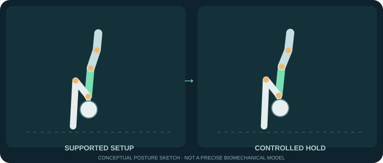

Exercise encyclopedia / Balance
Wall handstand hold
Use a clear wall, careful entry and a safe exit; maintain active shoulders during brief controlled holds.
Movement illustration

How to perform it
- Clear the wall and floor; learn how to return safely to the ground first.
- Enter a wall-assisted inversion with a suitable, controlled method.
- Press firmly through the hands and keep breathing during a brief hold.
- Exit intentionally rather than waiting for fatigue to cause a fall.
Breathe continuously and use a range that feels controlled and comfortable for your body.
Why this movement matters
Balance and inverted support demand coordination, joint tolerance and stabilizing effort; there is no single fixed pattern of muscle activation for everyone.
Progression checkpoint
Only increase duration if wrist comfort, shoulder control and exit remain reliable.
Equipment and safety
Practice near stable support in a clear space. Inversions require an exit strategy and may be unsuitable for some people.
Problem solving
Common mistakes & corrections
Correction: Use supervised practice or return to pike holds.
Correction: Reduce hold time and gently align ribs over pelvis.
Training progression
Find your next variation
This is one possible route from a lower-demand version to a more demanding version. You can switch back whenever needed; these steps are not fixed tests or guarantees.
- Pike hold
- Wall handstand hold
Readiness guidance: Only increase duration if wrist comfort, shoulder control and exit remain reliable.
Build a practice
Where this fits in a program
Wall handstand hold is a balance exercise. Pair it with movements from other patterns over the training week, and choose sets or hold times you can recover from. See the Balanced full-body program for adaptable examples; there is no universally correct repetition target.
Calisthenics Atlas editorial guide · November 2026 · Original conceptual artwork · General audience education